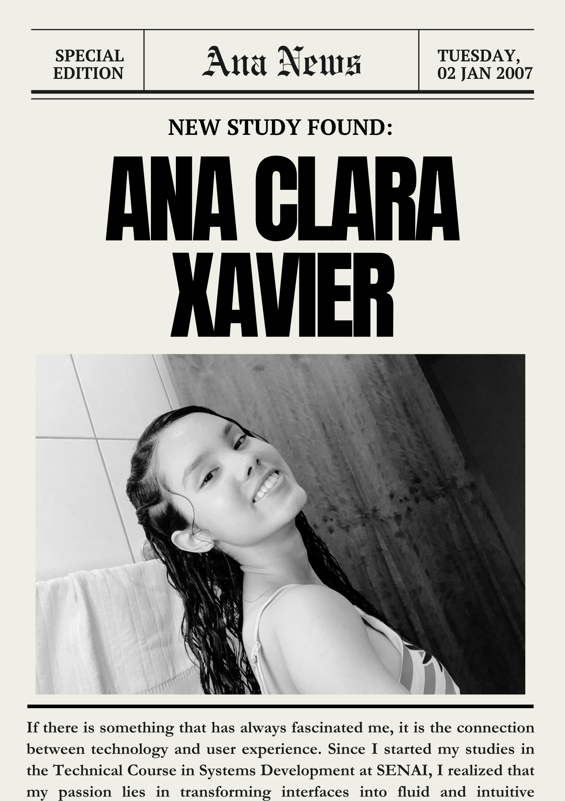

Hello! My name is Ana Clara Xavier, I’m 18 years old and a Systems Development student at SENAI. I currently work at Bosch as a young apprentice, where I’ve been gaining experience in the technology field and growing professionally every day. I’m passionate about reading and love getting lost in books of all kinds. Another thing I really enjoy is coloring — it helps me relax and express my creativity. I’m also a big fan of soap operas — the more, the better! I have a strong interest in languages and different cultures, especially Spanish, which I study with great enthusiasm. I believe that learning about the world and people makes us more empathetic and better prepared for the future.
